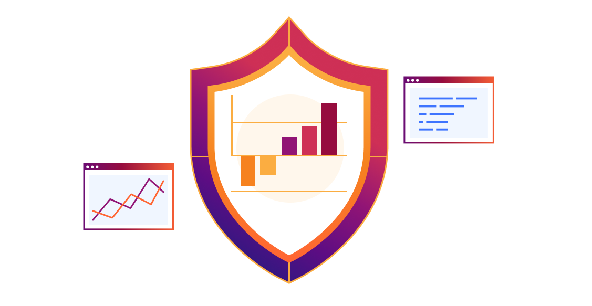

DDoS attacks rose to nearly 20M last year; a growth of 100%! Attackers use sophisticated techniques that traditional security solutions are not able to protect. On average, a DDoS attack can cost a business as much as $35,000 per hour. This next-generation solution combines industry-leading performance and DDoS protection and services, providing the ability to block destructive DDoS attacks before they cause damage.
A distributed denial-of-service (DDoS) attack takes place when a bad actor overwhelms a server with malicious internet traffic to prevent legitimate users from accessing applications, services, and networks. DDoS protection is extremely important because, if successful, a DDoS attack can wreak havoc on a company's reputation, even its finances. DDoS attacks can occur for several different reasons. One example is a reader or a group of readers launching an attack on a news service because they do not agree with the news organization's point of view. Another example is a DDoS attack on a popular e-commerce website to damage both the company's image and sales numbers. The longer the duration of the attack, the greater the magnitude of the damage. Avoiding DDoS attacks is difficult because detection is also difficult. One sign that a DDoS attack is underway is a slow upload and download speed. However, a slow internet connection is not often a cause for alarm. It could be because of a website experiencing a spike in popularity, too many ads on a page, or simply a weak internet connection. As such, it is extremely difficult to avoid attacks because detection is a challenge. However, proactive detection coupled with aggressive protection measures can stop a DDoS attack in its tracks, right before it causes harm to a company and its assets.
We mitigate DDoS attacks from the nearest location in more than 330 cities around the world, without sending traffic to faraway scrubbing centers. Cloudflare protects web applications, TCP/UDP applications, and networks and data centers alike, across OSI layers 3, 4, and 7.
Four Stages of DDoS Mitigation
Artificial intelligence (AI) enables machines to perform tasks that typically require human intelligence, including making decisions, recognizing human speech, perceiving visual elements, and translating languages. AI uses training data to comprehend context and determine how to respond or react in different situations. Artificial intelligence in cybersecurity is increasingly critical to protecting online systems from attacks by cyber criminals and unauthorized access attempts. If used correctly, AI systems can be trained to enable automatic cyber threat detection, generate alerts, identify new strands of malware, and protect businesses’ sensitive data. Benefits of artificial intelligence in cybersecurity include leveraging AI techniques—such as deep learning, machine learning (ML), knowledge representation and reasoning, and natural language processing—for a more automated and intelligent cyber defense. In this way, organizations can discover and mitigate the thousands of cyber events that they can come across daily.
Organizations must recognize an attack as early as possible. Even the tiniest of deviations in site traffic could indicate a DDoS attack. Human detection may not always catch unusual behaviors. As such, organizations are adopting user and entity behavior analytics (UEBA) solutions to detect abnormal network behavior. UEBA tools use machine learning to detect anomalies in the behavior of not just users but also the routers, servers, and endpoints in that network.
To stop a DDoS threat once it is identified, the network must respond quickly by absorbing or diverting malicious traffic away from the threat's intended target, such as a server. This is usually carried out via Domain Name System (DNS) routing. Because DNS routing is always on, it is effective against attacks on both the application and network layers.
By identifying patterns that distinguish legitimate from malicious traffic, DDoS traffic can be filtered out. This can be accomplished without disrupting the user experience. For example, an attack may target only one server but not others. The IT team can pinpoint which traffic to drop by determining which users are using the affected server.
To safeguard against future DDoS attacks, IT administrators should conduct an analysis of the attack and the organization's security response. They can accomplish this by capturing information about the attack via system logs and analytics. Information can also be shared externally with the larger cybersecurity community in general.
A DDoS attack targets websites and servers by disrupting network services in an attempt to exhaust an application’s resources. The perpetrators behind these attacks flood a site with errant traffic, resulting in poor website functionality or knocking it offline altogether. These types of attacks are on the rise. DDoS attacks are wide-reaching, targeting all sorts of industries and company sizes worldwide. Certain industries, such as gaming, ecommerce, and telecommunications, are targeted more than others. DDoS attacks are some of the most common cyberthreats, and they can potentially compromise your business, online security, sales, and reputation.